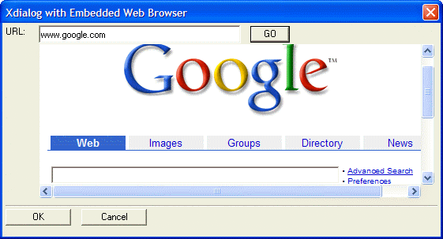

Internet Browser Style Xdialog
The Xdialog Genie (within the Action Scripting Editor ) has always made it easy to develop or prototype Xdialog boxes. The Xdialog Genie supports an Internet Browser ActiveX control. This is a fully functional internet browser window.

Just as with other control types, the genie lets you set all the important variables, then generates a finished Xdialog box. Available options include:
The source of the URL: it can be static, defined by an expression, or defined by the user.
Hyperlinks: can be enabled or disabled
ActiveX Events: can be exposed or hidden
Dialog title
Header text
Footer Text
Button Text
See Also
Xdialog Genie Internet Browser ActiveX Control Example
Supported By
Alpha Five Version 6 and Above